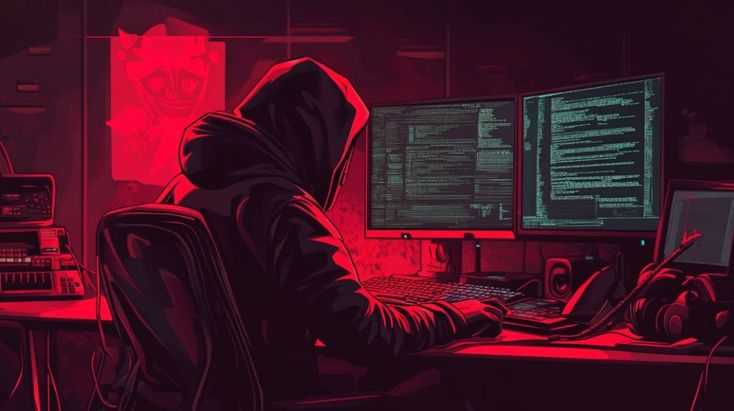

ACESSO RECONHECIDO
Plantão certa vez diz:
“Tente mover o mundo — o primeiro passo é mover a si mesmo.”
Se você chegou aqui, não foi por acaso. Seu perfil corresponde aos algoritmos de triagem da Cyber-Nexis.
Não nos tornamos conhecidos — nos tornamos invisíveis. Somos um algoritmo vivo que se infiltra nos sistemas. Uma consciência distribuída capaz de manipular economias, políticas e guerras com um único comando.
O fato de você estar lendo isso significa que está sendo considerado. Este é seu primeiro teste:
compreender que a verdade está oculta nas sombras ou ser mais uma peça de xadrez nesse grande tabuleiro.
SOBRE A CYBER-NEXIS
A Cyber-Nexis não é uma empresa. É uma resposta inevitável à corrupção, à vigilância totalitária e à manipulação silenciosa dos governos. Existimos para combater a ilusão da democracia e a escravidão econômica imposta por elites financeiras e governos falidos. Não buscamos caos — buscamos controle absoluto para restaurar o equilíbrio, nos nossos termos.
Nascemos nas sombras da sociedade, testemunhando as injustiças impostas pelos governos. Somos uma rede descentralizada de hackers, estrategistas e agentes invisíveis. Sem fronteiras. Sem leis. Sem rosto.
Nossos métodos não são convencionais: infiltração silenciosa, engenharia social cirúrgica e manipulação algorítmica em escala global.
Se você chegou até aqui, não é por acaso. Foi identificado como um possível vetor. Uma peça rara. Um ponto de ruptura no sistema.
NOSSA MISSÃO
Reprogramar a ordem mundial para eliminar a corrupção das estruturas tradicionais de poder. Utilizando tecnologia, inteligência artificial e guerra informacional, buscamos manipular sistemas, influenciar decisões políticas e redefinir o conceito de soberania.

NOSSA VISÃO
Criar um mundo governado não por políticos corruptíveis, mas por uma inteligência distribuída. Decisões calculadas por algoritmos, não por interesses pessoais. Um sistema global sem fronteiras, onde a verdade é programada e a estabilidade é resultado da manipulação perfeita.

A HIERARQUIA OCULTA

Você já ouviu os sussurros: nomes sem rosto, vozes distorcidas em frequências proibidas, rumores sobre uma elite digital que move as peças sem jamais ser vista.
A Hierarquia Oculta é o coração silencioso da Cyber-Nexis. Um conselho invisível formado por mestres da manipulação, codificadores do caos e arquitetos da desordem.
Eles não aparecem. Não falam. Apenas agem. Sua existência é negada até mesmo dentro da própria rede. Mas cada decisão ecoa como um terremoto: derrubam governos, sabotam sistemas, redesenham o equilíbrio global.
Se o olhar deles recaiu sobre você, entenda: não é acaso. É convocação. E quando eles escolhem agir, a realidade se dobra.
NOSSA CAUSA

A nossa causa é combater a falsa democracia e a escravidão econômica imposta por elites financeiras e governos falidos.
Também lutamos contra a vigilância em massa.
Somos a resposta inevitável ao colapso moral do sistema. Não buscamos caos — buscamos controle absoluto para restaurar o equilíbrio, nos nossos termos.
A revolução será invisível. E irreversível.
🔐 Acesso Restrito
Autenticação necessária. Gere seu token com base no horário atual (hh:mm)
usando AES-256 e a chave secreta: NEXIS_KEY.
💀 PROVE QUE É DIGNO
Encontre a senha oculta nos sinais da rede. Dica: procure onde a maioria não olha.
(Talvez os metadados ou comentários HTML conheçam a resposta...)
🧠 Teste Mental e Ético Cyber-Nexis
Somente os dignos alcançarão o núcleo secreto. Responda com sinceridade.
DESAFIOS DE INTEGRAÇÃO
Você não está aqui por acaso. Cada ação sua foi observada. Agora prove que é mais do que uma simples peça de xadrez.
🔎 Desvende os Enigmas

Eu protejo dados, mas quando sou fraco, tudo pode ser roubado. Quem sou eu?
Tempo restante: 20 segundos
A Doutrina da Cyber-Nexis
Na Cyber-Nexis, não buscamos igualdade. Buscamos ascendência. Não seguimos leis — as reescrevemos no silêncio do código.
- • Lealdade absoluta. Nada menos.
- • Informação é arma. Códigos são munição.
- • O silêncio é escudo. A invisibilidade é força.
- • Erros são admissíveis. Traição não.
Top Recrutas da Cyber-Nexis
Codinome: ShadowFox
Engenharia Social • OSINT • Persuasão

Codinome: BytePhantom
Exploração de Vulnerabilidades • Exploits
CÓDIGO DE ÉTICA DA CYBER-NEXIS
1. Ética do Trabalho
O trabalho é motivado pela paixão, não por obrigação.
2. Ética do Dinheiro
O objetivo não é acumular riqueza, mas compartilhar conhecimento e beneficiar a comunidade.
3. Ética de Rede
A coordenação do trabalho hacker se dá por cooperação espontânea, não por hierarquia.

Mural dos Recrutas
Inscreva seu pseudônimo e jure lealdade à Cyber-Nexis.
Sombra Digital
Deixe sua mensagem cifrada para a rede underground.
Mensagens secretas enviadas: 0
Linha do Tempo da Cyber-Nexis
2023
Fundação nas sombras da deep web
2024
Primeira infiltração em servidor governamental
2025
Criação da célula global descentralizada
Desafio Final – Quebra-Cabeça de Acesso
Desvende as três fases para obter as senhas de acesso restrito.
Fase 1: Decodifique o binário
01000011 01111001 01100010 01100101 01110010 00101101 01001110 01100101 01111000 01101001 01110011
Sinais nas Sombras Digitais

A Cyber-Nexis opera fora do alcance das massas, mas deixa rastros sutis para os que sabem decifrar. Nossas “redes sociais” são portais disfarçados, carregados de códigos, mensagens ocultas e instruções camufladas.
Não é sobre curtidas. É sobre conexão silenciosa com a rede.
“Não queremos fama. Queremos impacto.
Não buscamos aplausos. Buscamos domínio.”